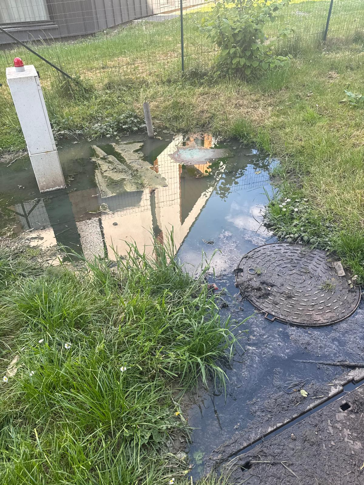
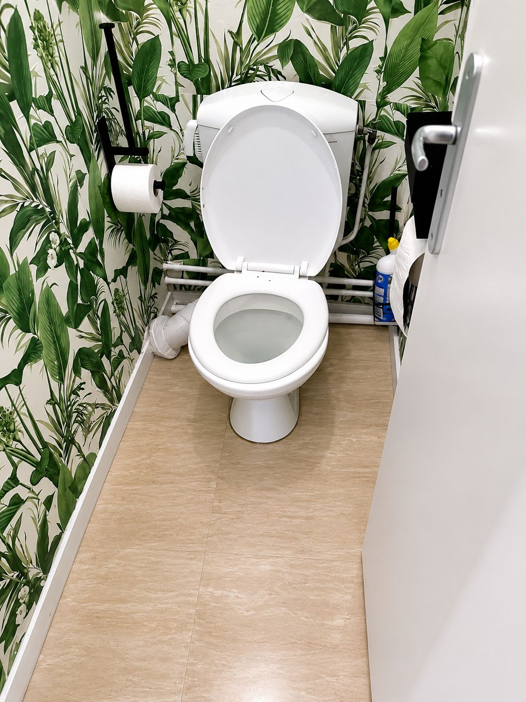
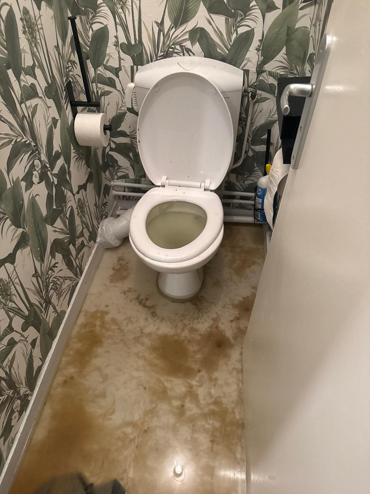
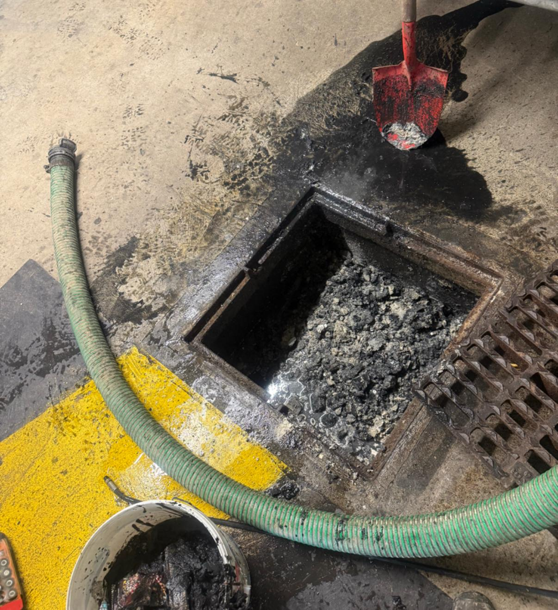
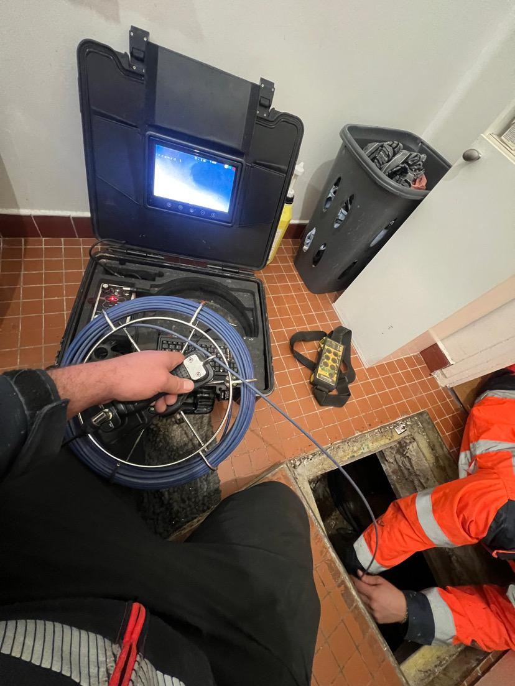
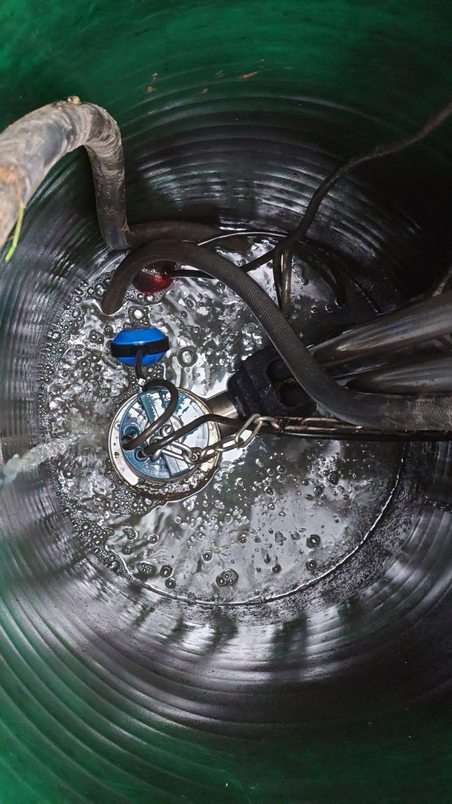
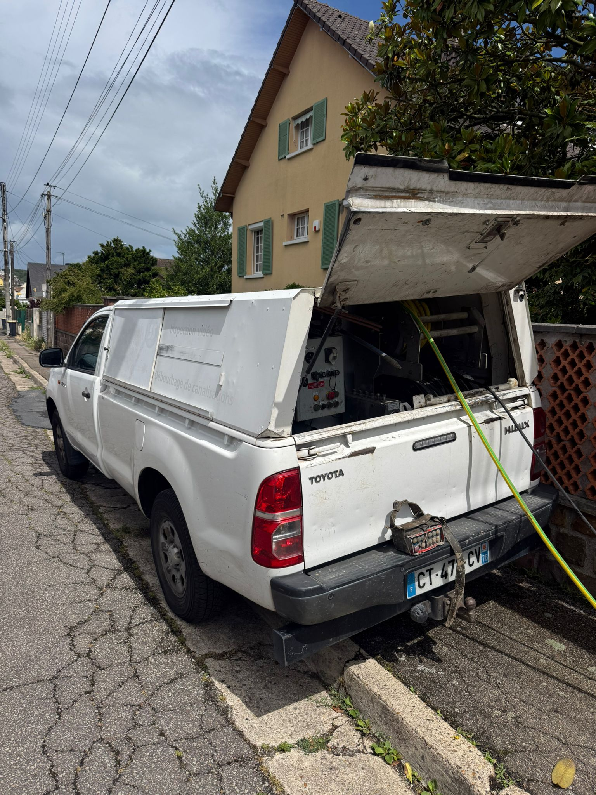
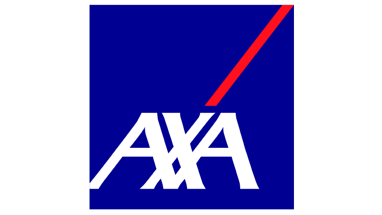
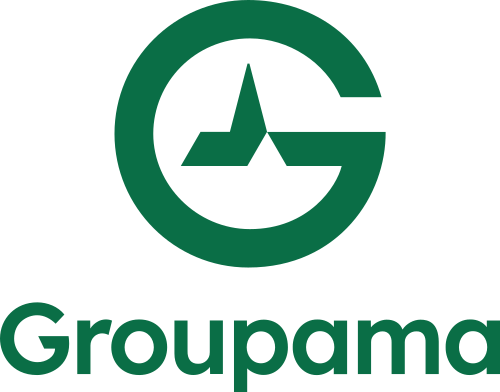
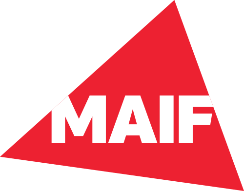

Entretien et remise en conformité de vos installations d'assainissement : réseaux, fosses, puisards et raccordements. Nous intervenons chez les particuliers, professionnels et collectivités en Normandie.

0
Interventions réalisées
0
Clients satisfaits
ND
Une équipe équipée pour l'assainissement, la plomberie et le débouchage — interventions rapides, propres et sécurisées à Rouen et dans toute la Normandie. Survolez un service pour découvrir le détail.
Entretien et remise en conformité de vos installations d'assainissement : réseaux, fosses, puisards et raccordements. Nous intervenons chez les particuliers, professionnels et collectivités en Normandie.

Dépannage et réparation de plomberie : fuites, canalisations, sanitaires, chauffe-eau et équipements. Un expert ND intervient avec le matériel adapté pour une solution durable.

Débouchage d'urgence des canalisations obstruées : éviers, WC, douches, baignoires et colonnes d'immeuble. Intervention rapide 24h/24 et 7j/7 pour limiter les dégâts des eaux.

Nettoyage haute pression des canalisations et avaloirs pour éliminer graisses, calcaires et dépôts. Le curage préventif prolonge la durée de vie de vos réseaux et évite les blocages.

Inspection vidéo des canalisations pour localiser avec précision fissures, racines, affaissements ou objets bloquants. Un diagnostic fiable avant toute réparation, pour éviter les travaux inutiles.

Vidange, pompage et évacuation de fosses, puisards, caves inondées ou bacs de rétention. Notre camion équipé assure une évacuation conforme et un chantier laissé propre.

Entretien préventif ou remplacement de pompe de relevage : contrôle, nettoyage et remise en service de vos installations. Nous garantissons une évacuation fiable des eaux usées et anticipons les pannes pour éviter tout débordement.

0
Interventions réalisées
Débouchage, curage, pompage et assainissement chez les particuliers, professionnels et collectivités.
Normandie Débouche
Contactez-nousQuatre engagements qui font la différence à chaque intervention de débouchage, d'assainissement ou de plomberie en Normandie. Défilez pour découvrir nos engagements.
Chantier protégé pour chaque débouchage de canalisation, curage haute pression ou pompage à Rouen et en Normandie. Matériel professionnel, camion hydrocureur entretenu — nous laissons vos lieux propres et sécurisés.
Plombier qualifié pour débouchage, dégorgement, inspection caméra et plomberie d'urgence. Diagnostic précis, devis gratuit et explications claires — sans jargon, à Rouen et dans toute la Normandie.
Débouchage, curage, pompage et plomberie contrôlés avant notre départ. Canalisation débouchée, écoulement vérifié — votre tranquillité est notre priorité, chez les particuliers, professionnels et copropriétés.
Débouchage, assainissement et plomberie pris en charge en direct par votre assurance — sinistre dégât des eaux, canalisation bouchée ou fuite. Sans avance de frais, à Rouen, Le Havre, Caen, Évreux et partout en Normandie.
ND
Des prix clairs et sans surprise. Le devis est gratuit et confirmé avant toute intervention — vous savez exactement ce que vous payez.
Évier · WC · douche · lavabo
à partir de89 €
Canalisations & colonnes
à partir de249 €
Fuites · sanitaires · réparations
à partir de79 €
Préventif · réseaux · avaloirs
sur devisGratuit
Inspection vidéo · diagnostic
à partir de149 €
Fosses · puisards · caves
à partir de329 €
Entretien · remplacement
à partir de149 €
Réseaux · fosses · raccordements
sur devisGratuit
Tarifs indicatifs TTC, hors déplacement, donnés à titre informatif. Ils varient selon la nature et l'accès à l'intervention. Le prix exact vous est communiqué avant le début des travaux — devis gratuit et sans engagement.
ND
La satisfaction de nos clients fait notre réputation en Normandie. Voici ce qu'ils pensent de nos interventions.
« Intervention ultra rapide un dimanche soir pour un WC bouché. Travail propre et tarif annoncé respecté. Je recommande vivement. »
« Dégorgement d'une canalisation principale dans notre copropriété. Équipe professionnelle, matériel impressionnant et chantier impeccable. »
« Passage de caméra puis curage de la fosse. Diagnostic clair, devis détaillé et explications à chaque étape. Très satisfaite du service. »
Agréés et en partenariat avec les principales compagnies d'assurance en France



ND
Vous vous posez des questions avant de nous appeler ? Retrouvez ici les réponses aux demandes les plus courantes.
Oui. Une urgence (canalisation bouchée, dégât des eaux, refoulement) ne prévient pas — nous sommes joignables jour et nuit, week-ends et jours fériés compris, sur toute la Normandie.
Absolument. Nous évaluons votre besoin et vous communiquons un prix clair avant toute intervention. Aucun travail n'est lancé sans votre accord.
Nous intervenons sur l'ensemble de la Normandie, auprès des particuliers, des professionnels et des collectivités. Contactez-nous pour confirmer un délai sur votre commune.
Nous acceptons les principaux moyens de paiement (espèces, carte, virement). Une facture détaillée vous est systématiquement remise après l'intervention.
Oui, c'est l'un de nos engagements. Nous protégeons les lieux, utilisons du matériel adapté et laissons systématiquement votre espace propre et sécurisé.
Normandie Débouche
Assainissement & plomberie — débouchage professionnel
Besoin d'une intervention rapide à Rouen ou ailleurs en Normandie ? Appelez ou écrivez-nous — nous répondons 24h/24, 7j/7.
Normandie à vos côtés,
nous débouchons vos soucis !
Débouchage & assainissement à Rouen et toute la Normandie
Canalisation bouchée, WC ou évier engorgé, fosse septique pleine ? Nos experts interviennent 24h/24 et 7j/7 pour le débouchage, le curage, le pompage et la mise en conformité de vos réseaux à Rouen, Le Havre, Caen, Évreux et partout en Normandie.
Intervention rapide & devis gratuit · Agréé assurances